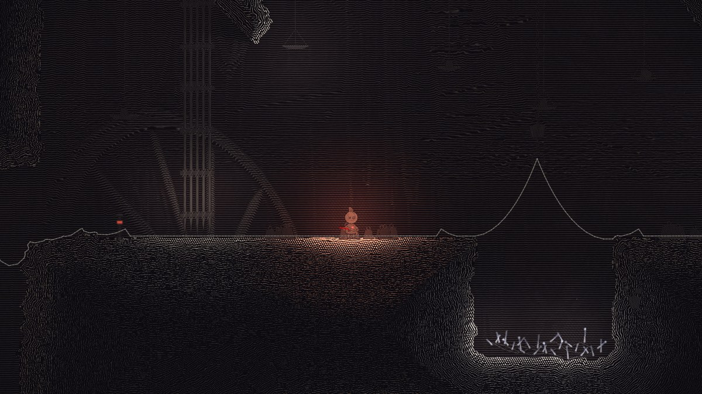
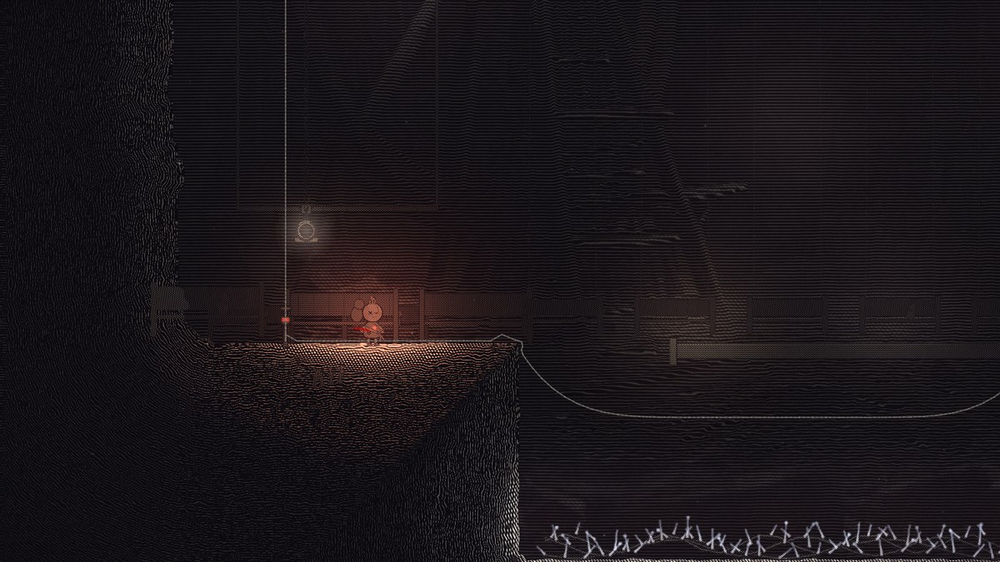
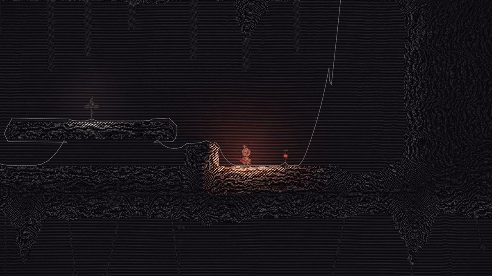
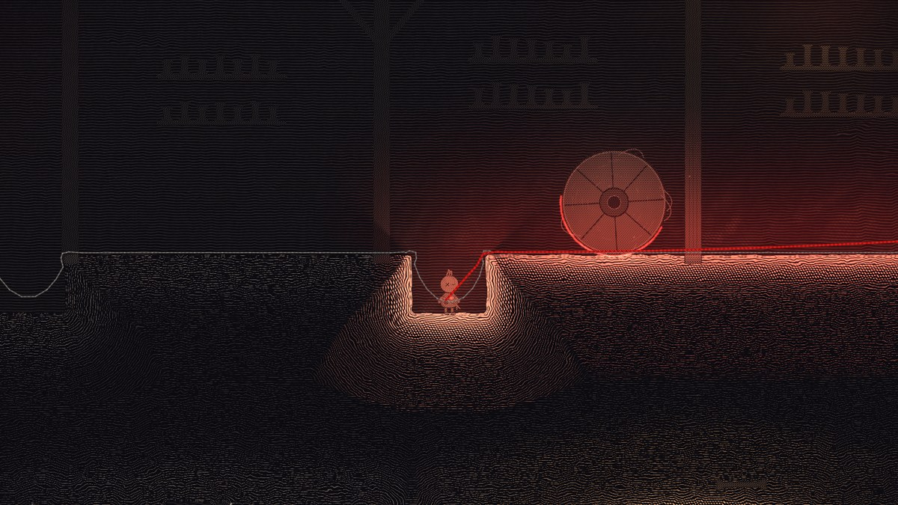
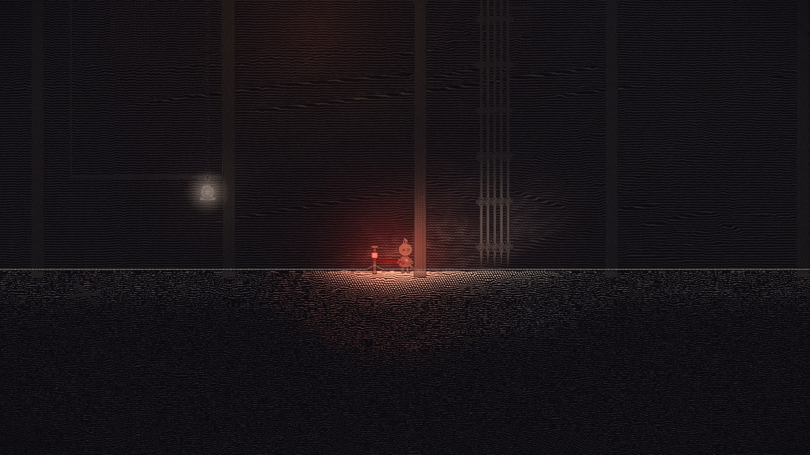
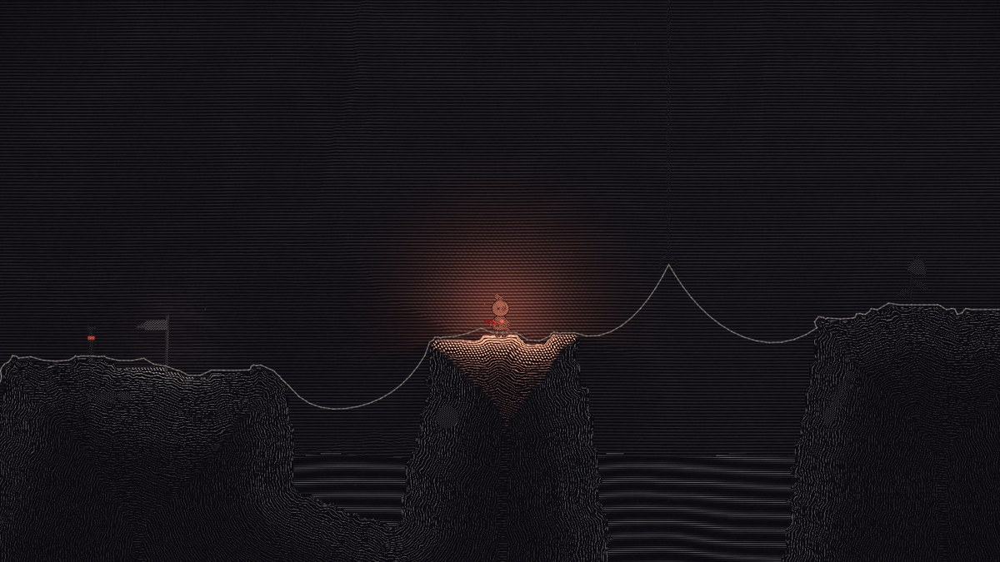
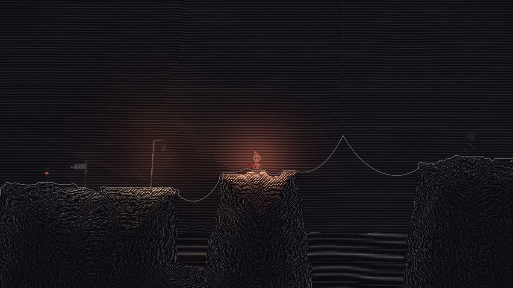
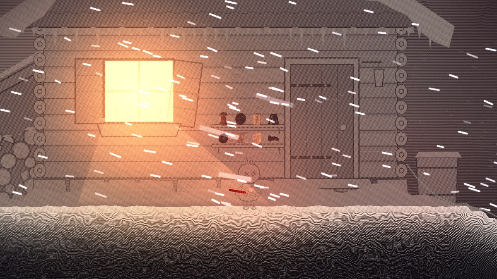
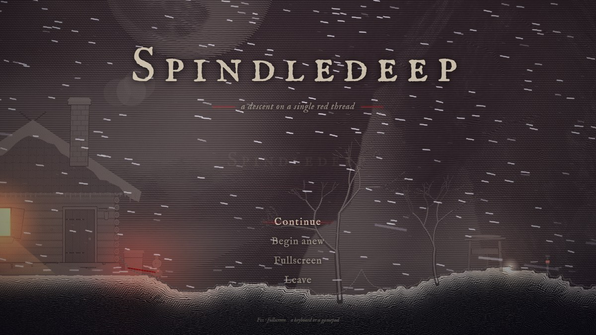
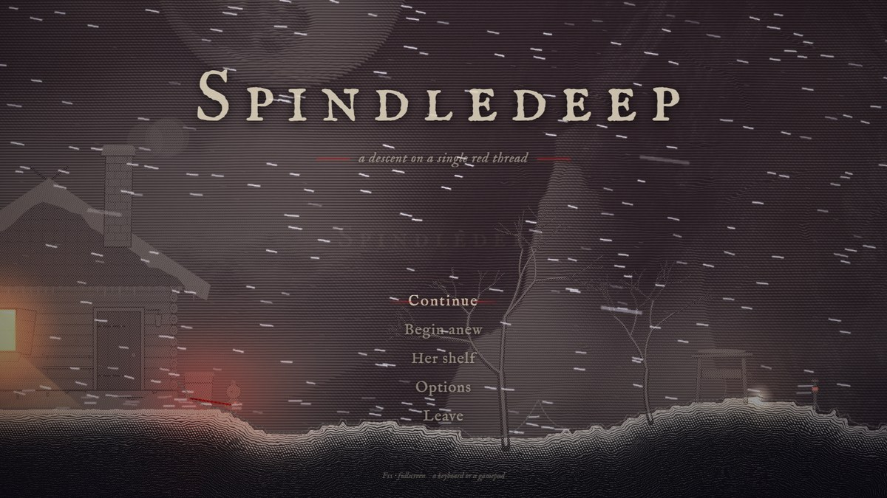

Six new roomsand more to do with one thread
please implement all the points that you mentioned
All eight are in. The way down is longer by six rooms, two under each of the Hall, the Hush and the Treadles, and each is built on something new the thread can do. Around them: a fairer Mere, moths and hands that react, a shelf for the keepsakes, options, a second way to play, and a fresh build.





The second room of each pair brings the area’s own danger back with rings or handles added: hands over beds of pins in the Hush, heddles and swinging rings below the Treadles. There are thirteen new poles and three new skeins. Nothing that existed has moved except the hole in the Hall, which now has a mat across it and a way round beneath, the tunnel between the Hush’s first two caves and the well below the Treadles, which now lead through the new rooms. A bot crossed every room with the real thread, each with several or many timings:
| Room | Timings that work |
|---|---|
| The sinking ring and its door | 11 of 49 |
| The handle and the bridge | 9 of 9 |
| The two slabs, the right way / the wrong way | 5 of 9 / 0 of 3, as meant |
| The two rings over the pins | 6 of 24 and 14 of 59 |
| The bobbin, from gutter to gutter / just running | 16 of 16 / 0 of 24, as meant |
| The lower room: swinging ring, handle, last ring | 13 of 59, 9 of 9, 7 of 49 |
The bots let go on the first forward swing after a set time, so a person who looks has more chances than that. The older rings of the Gallery and the Mere score between 6 and 42 in the same kind of test.
It was as bad as your deaths suggested. From the last island only 6 of 20 places to jump from worked, and only with the jump button held down. The shore now comes out 1.4 metres further and is level, and a lamp burns on it so you can see where to land. Now 19 of 20 work with a held jump.


BeforeAfterDrag the thread to compare
Every keepsake you have ever found stands on a shelf by her door, and Her shelf is on the title screen. Open it at either place to turn each one over and read it again; the ones in your present save are already there. Finding all eight in one run gives the doll her second eye, and she sees half as far again in the dark.



BeforeAfterDrag the thread to compare
The exe files in release are rebuilt with everything so far. The screens were checked at wide, 4:3 and nearly square window shapes and fit in all of them. At half detail the game still held 58 frames a second, but I only have a fast graphics card here, so a slow one is untested. A save from before the new rooms was loaded and its thread was laid again clear of the rock.
app/src/rig.jsSinking rings, handles, spindles, the bobbin.app/src/level.jsThe six rooms.app/src/drawrig.js drawrooms.jsHow they look.app/src/options.js input.jsOptions and keys.app/src/deep.js world.jsHands and moths, the Frayed run.scripts/checks/rooms.mjsThe bots that cross the rooms.